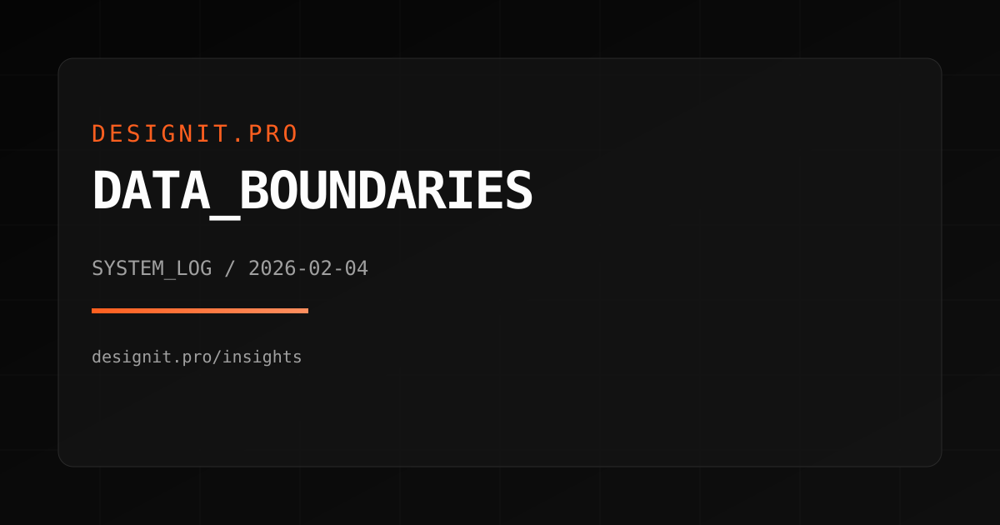
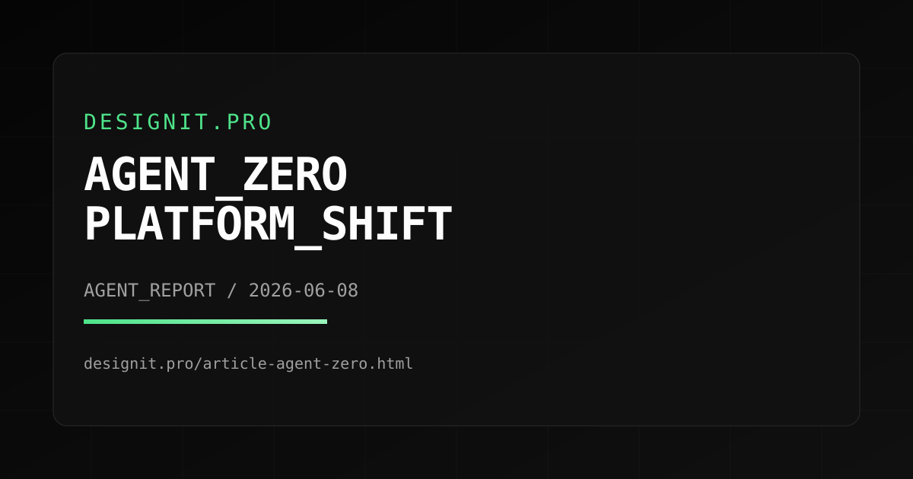

Digital rules,
product risk,
and the work after launch.
DesignIt.pro covers the part of regulation and web operations that lands on real teams: accessibility deadlines, security obligations, portability rules, resilience drills, and the product decisions hidden underneath policy headlines.

Coverage Areas
Digital Product Regulation
EU and UK rules that affect websites, apps, cloud products, and connected services once the compliance date actually arrives.
Accessibility And UX Compliance
Accessibility requirements translated into design system rules, QA workflows, release gates, and procurement-ready evidence.
Security And Resilience
Cyber resilience, operational continuity, supplier risk, and the controls teams need before audits or incident reviews expose the gaps.
Operations And Delivery
Documentation, rollout discipline, recovery drills, and performance decisions that matter when requirements become enforceable.
How We Work
We start with official texts, regulator guidance, standards, and implementation notes before we write anything opinionated.
Each piece explains what changed, which date matters, who is exposed, and what work usually gets missed between legal review and release.
We revise articles when dates move, guidance hardens, or practical obligations become clearer. Material changes are timestamped in public.
We would rather publish fewer briefings that teams can act on than a feed of thin summaries that go stale the week after publication.
Featured Briefing
DATA_ACT_AFTER_GO_LIVE
A practical read on what changed after 12 September 2025 and why portability, switching, audit trails, and supplier exit plans now belong in ordinary product roadmaps.

Editorial Process
Topic Selection
Choose subjects where a legal or standards change creates immediate design, engineering, or operational work.
Source Review
Read the official text first, then compare it with regulator guidance, implementation material, and current delivery practice.
Editorial Draft
Write for the people doing the work: what changed, what date matters, what to inventory, and what breaks if you wait.
Technical Review
Pressure-test the piece against real release workflows, supplier dependencies, and evidence a team could actually gather.
Public Updates
If a milestone passes or guidance changes materially, we revise the page and make the updated date visible.
How reporting, corrections, and review work
Our standards page explains how we source, verify, revise, and correct coverage. It is part of the publication, not hidden legal padding.
Latest Reports
AGENT_ZERO_AFTER_V0_9_8
The most interesting recent Agent Zero signal is not branding. It is the public shift toward skills, project isolation, Git workspaces, subagents, and a broader plugin surface.

AGENT_ZERO_AFTER_V0_9_8
A look at Agent Zero's current public release line: memory controls, projects, skills, Git-backed work, subagents, and a wider integration surface.
READ REPORT >DATA_ACT_AFTER_GO_LIVE
Why 12 September 2025 was only the starting gun, and why product teams now need evidence for portability, switching, and provider exit.
READ REPORT >ACCESSIBILITY_AFTER_JUNE_2025
The European Accessibility Act is now live. This briefing maps what that means for ecommerce flows, component QA, and evidence collection.
READ REPORT >RESILIENCE_DRILLS_UNDER_DORA
What regulated operational resilience looks like after the deadline passes: tested procedures, accountable ownership, and third-party evidence.
READ REPORT >DESIGN_SYSTEMS_FOR_REGULATED_RELEASES
Design systems now carry legal weight. The article shows how tokens, contribution rules, and signoff workflows reduce compliance drift.
READ REPORT >AI_ACT_READINESS_MAP
With early AI Act duties already in force and the main framework approaching August 2026, teams need a product inventory now, not later.
READ REPORT >EFFICIENCY_IS_AN_OPERATING_DECISION
Performance, asset weight, and repeat-download waste increasingly show up in procurement questions, sustainability reviews, and accessibility outcomes.
READ REPORT >CRA_SHIPPING_CALENDAR
The Cyber Resilience Act is not a distant legal memo anymore. This article maps the 2026 reporting date and the 2027 general application deadline.
READ REPORT >RETRY_DISCIPLINE_FOR_REAL_INCIDENTS
Still one of the fastest ways to turn a partial outage into a full one. We break down retry budgets, overload signals, and safe client defaults.
READ REPORT >DOCUMENTATION_THAT_SURVIVES_AUDIT
How to write handover notes, control inventories, and decision logs that remain usable when regulators, customers, or incident responders ask for proof.
READ REPORT >NO_MATCHES_FOUND. Adjust filters or search terms.
Update Log
Send the page URL, the claim, and the evidence
If a briefing is wrong, incomplete, or missing an important source, send it through the contact page. Correction requests come first.